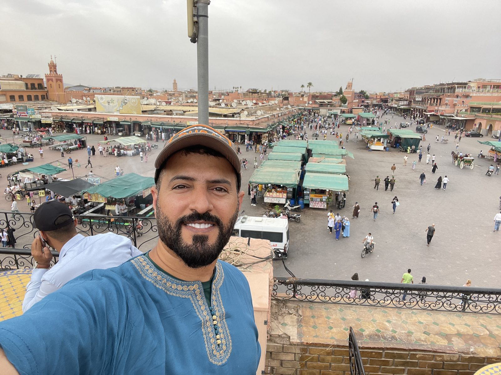
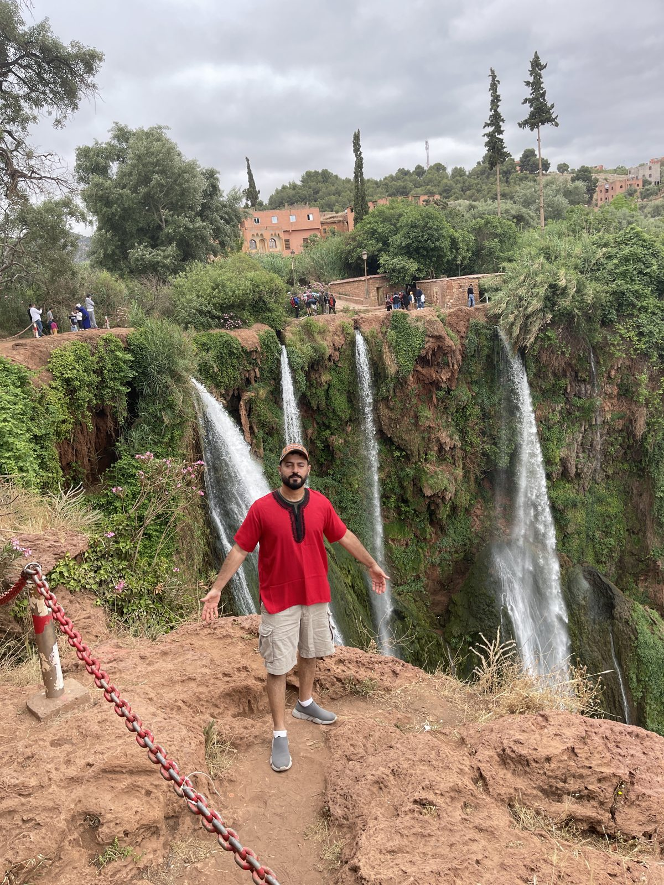
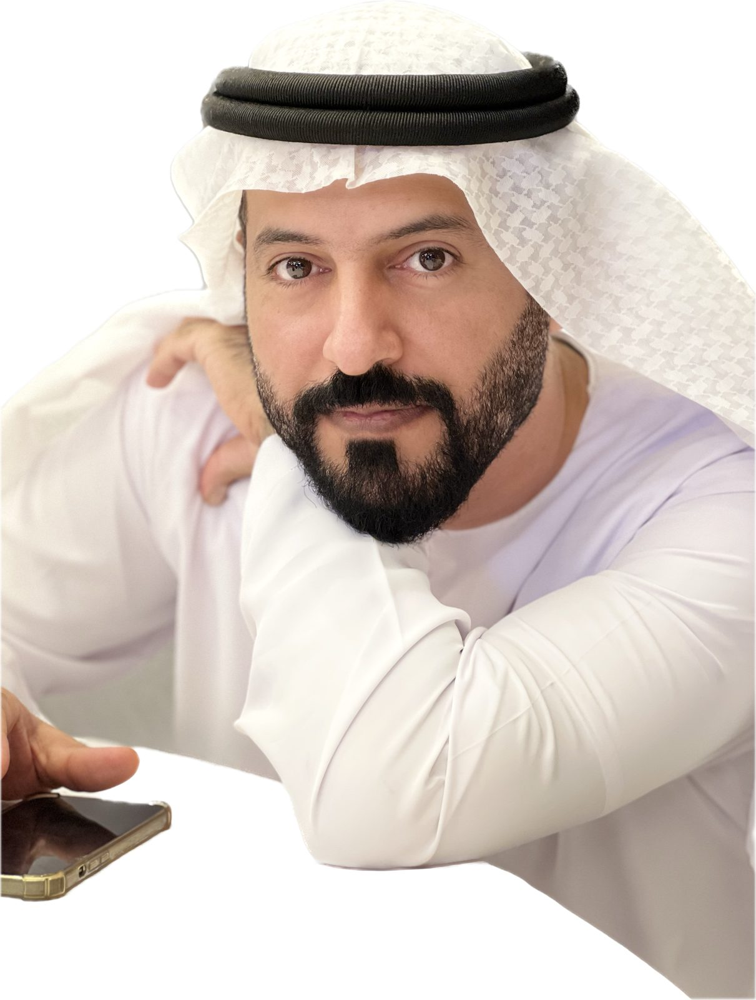
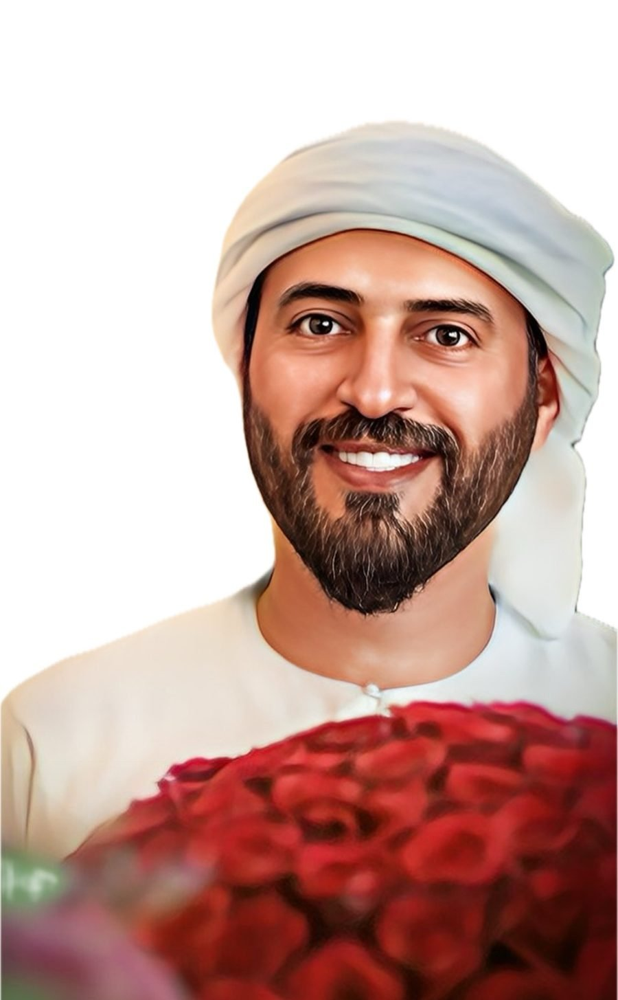
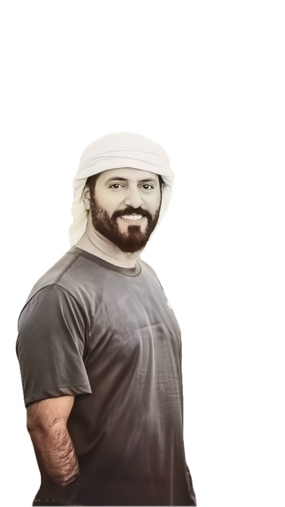

👋 من أنا
محمد عبدالله الكتبي، من الإمارات، مسقط رأسي الذيد في إمارة الشارقة، وأتنقل في يومي بين الشارقة ودبي. خريج هندسة الحاسوب والبرمجة من California State University, Chico.
هادئ نوعاً ما، مع شوية فكاهة وضحك على نفسي 😄 وأكثر شي يسعدني تكوين صداقات صادقة من مختلف أنحاء العالم.
🤍 حياة بسيطة ومليئة بالامتنان
🧭 قصتي
-
🏡
البداية في الذيد
مسقط رأسي في إمارة الشارقة، ومنها بدأت حياة بسيطة ومليئة بالامتنان.
-
🎓
هندسة الحاسوب
درست هندسة الحاسوب والبرمجة في California State University, Chico، وتخرجت منها.
-
✈️
الشغف بالسفر
صار السفر شغفي الأول، وزرت قرابة 70 دولة، وكوّنت صداقات من مختلف أنحاء العالم.
-
🎬
صناعة المحتوى
بدأت أوثّق يومياتي وسفري بأسلوب عفوي وصادق، وأنشرها في إنستقرام وسناب وتيك توك.
-
🔥
الحدادة والمزرعة
دخلت عالم الحدادة واللحام والزراعة وتربية الحيوانات، عشان أعتمد على نفسي في أعمال البيت.
-
🌍
والرحلة مستمرة
أتعلم أدوات جديدة، وأزور دولاً جديدة، وأكمل الطريق بامتنان.
✈️ السفر
شغفي الأول، وهدفي أزور أكبر عدد ممكن من الدول بحسب الاستطاعة. من الدول اللي زرتها:
📜 قواعد محمد في السفر
- 1🤍أبدأ بالامتنان
- 2🤝أكوّن صداقات صادقة
- 3🎈العفوية أحسن من الترتيب
- 4🔊أسمع صوت المكان
- 5🚶أمشي وأشوف بعيوني
- 6🌅ما أفوّت الوقت الذهبي
- 7📸أوثّق بدون ما تفوتني اللحظة
- 8🧳أبسّط ولا أعقّد
🎯 هواياتي ووقت الفراغ
الحدادة واللحام
دخلتها مؤخراً، وأصنع أفكار ومجسمات جديدة من الحديد.
الزراعة والحيوانات
أقضي وقتي في المزرعة وأربّي الحيوانات.
الدراجات
أحب ركوب الدراجات بأنواعها.
الاعتماد على النفس
هدفي من الحدادة والزراعة أنجز أعمال البيت البسيطة بنفسي.
🎬 المحتوى
أصنع محتوى ليومياتي والأعمال اللي أسويها، ومحتوى السفر، وأنشره في إنستقرام وسناب وتيك توك.
مو مصقول زيادة، ولا يشبه الإعلانات.
💻 أتعلم وأستخدم
أحب أتعلم الأنظمة والأدوات الجديدة، ومنها:
📷 صور






اضغط على الصورة لتكبيرها